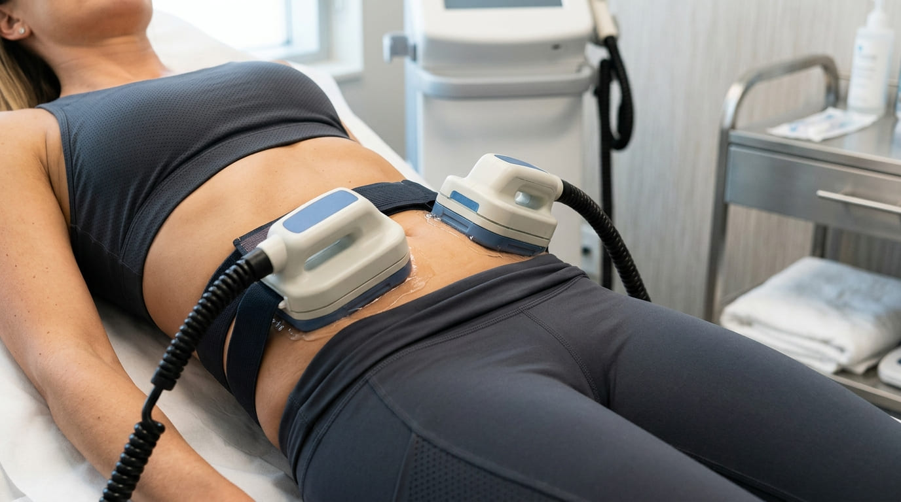

Body Contouring · Laser Fat ReductionContorno Corporal · Reducción de Grasa con Láser
Achieve the Shape
You Desire.
Logra la Figura
Que Deseas.
BodySculp is a state-of-the-art laser body contouring treatment that can effectively eliminate even the most stubborn fat cells — a non-invasive alternative for fat reduction using advanced laser technology. BodySculp es un tratamiento de contorno corporal láser de última generación que elimina eficazmente incluso las células de grasa más rebeldes — una alternativa no invasiva para la reducción de grasa mediante tecnología láser avanzada.

What is BodySculp & how does it work?¿Qué es BodySculp y cómo funciona?
Stubborn fat, permanently eliminated. Grasa rebelde, eliminada de forma permanente.
BodySculp uses 1060nm diode laser technology to destroy fat cells beneath the skin. The laser targets adipose tissue by generating heat that weakens and eliminates triglycerides. BodySculp utiliza tecnología láser de diodo de 1060nm para destruir las células de grasa debajo de la piel. El láser actúa sobre el tejido adiposo generando calor que debilita y elimina los triglicéridos.
Destroyed fat cells exit the body through the lymphatic system naturally — leaving you with a slimmer, more sculpted silhouette without surgery or downtime. Las células de grasa destruidas salen del cuerpo a través del sistema linfático de forma natural — dejándote una silueta más delgada y esculpida sin cirugía ni tiempo de recuperación.
Book a consultationAgenda una consulta →What is the procedure like?¿Cómo es el procedimiento?
Fast. Comfortable.
No downtime.
Rápido. Cómodo.
Sin tiempo de recuperación.
PreparationPreparación
A numbing agent is applied to the treatment area for comfort. Four applicators are placed to simultaneously target multiple sections. Se aplica un agente anestésico en el área de tratamiento para mayor comodidad. Se colocan cuatro aplicadores para actuar simultáneamente sobre múltiples zonas.
Laser TreatmentTratamiento Láser
A 25-minute cycle of alternating laser heat and cooling waves. The 1060nm diode laser heats and destroys fat cells while the cooling phase reduces heat sensitivity and maximizes comfort. Un ciclo de 25 minutos de calor láser alternado con ondas de enfriamiento. El láser de diodo de 1060nm calienta y destruye las células de grasa mientras la fase de enfriamiento reduce la sensibilidad al calor y maximiza el confort.
Post-TreatmentPost-Tratamiento
A soothing cream is applied post-treatment to minimize redness. Clients report a lighter feeling immediately. You'll begin to notice body contouring effects 2–6 weeks after the procedure. Se aplica una crema calmante para minimizar el enrojecimiento. Los clientes reportan una sensación de ligereza inmediata. Comenzarás a notar los efectos del contorno corporal de 2 a 6 semanas después del procedimiento.
Who is an ideal candidate?¿Quién es la candidata ideal?
Is BodySculp
right for you?
¿Es BodySculp
para ti?
A note from our teamUna nota de nuestro equipo
It is important to note that consultation is an important and essential part of the treatment process. Our medical providers will evaluate your unique body composition and determine whether BodySculp is the right treatment for you. Es importante mencionar que la consulta es una parte importante y esencial del proceso de tratamiento. Nuestros proveedores médicos evaluarán tu composición corporal única y determinarán si BodySculp es el tratamiento adecuado para ti.
Book a consultationAgenda una consulta →Benefits of BodySculpBeneficios de BodySculp
What BodySculp
does for you.
Lo que BodySculp
hace por ti.
When do results appear & how lasting are they?¿Cuándo aparecen los resultados y qué tan duraderos son?
Results that
Reshape Your Body.
Resultados que
Remodelan tu Cuerpo.
You'll begin to notice the body contouring effects 2–6 weeks after the procedure as excess fat liquefies and is eliminated via the lymphatic system. Most clients report a visibly slimmer, more sculpted silhouette. Comenzarás a notar los efectos del contorno corporal de 2 a 6 semanas después del procedimiento, a medida que el exceso de grasa se licua y es eliminado por el sistema linfático. La mayoría de los clientes reportan una silueta visiblemente más delgada y esculpida.
Book a consultationAgenda una consulta →What clients sayQué dicen nuestras clientas
400+ five-star reviews.400+ reseñas de cinco estrellas.
Why choose Olam Med SpaPor qué elegir Olam Med Spa
Expert care. Every time. Atención experta. Siempre.
Advanced Laser TechnologyTecnología Láser Avanzada
BodySculp's 1060nm diode laser is specifically calibrated to target adipose tissue with precision, maximizing fat reduction while protecting surrounding skin.El láser de diodo de 1060nm de BodySculp está calibrado específicamente para actuar sobre el tejido adiposo con precisión, maximizando la reducción de grasa mientras protege la piel circundante.
Personalized Contouring PlanPlan de Contorno Personalizado
Our medical team maps your treatment zones and customizes applicator placement to target your specific problem areas for optimal results.Nuestro equipo médico mapea tus zonas de tratamiento y personaliza la colocación de los aplicadores para actuar sobre tus áreas problemáticas específicas y obtener resultados óptimos.
Comfortable, Zero DowntimeCómodo, Sin Tiempo de Recuperación
BodySculp's cooling system ensures a comfortable experience throughout. Walk in, walk out — no recovery time, no interruption to your day.El sistema de enfriamiento de BodySculp garantiza una experiencia cómoda de principio a fin. Entra y sal — sin tiempo de recuperación, sin interrupciones en tu día.
Ready to sculpt your body?¿Lista para esculpir tu cuerpo?
Book your BodySculp consultation at Olam Med Spa in Pembroke Pines today.Agenda tu consulta de BodySculp en Olam Med Spa en Pembroke Pines hoy.